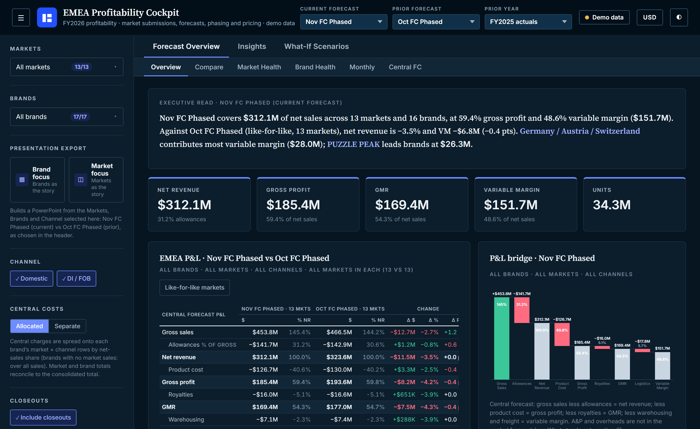

Head of Finance, Global Emerging Markets · Amsterdam
Finance built on clear numbers
Senior finance leader with 15+ years in international consumer goods and FMCG. At Hasbro I built the Global Emerging Markets finance function from zero, across a 20+ market distributor portfolio in EMEA, APAC and Latin America.
Profile in two minutes
A finance leader who has built the function, not just run it
Commercially minded and controls-led, with experience in listed multinationals and a PE-backed company.
Selected impact
Evidence from the work
Outcomes from my career at Hasbro.
Operating losses saved
Over three years, by moving loss-making local operations to a profit-generating distributor model.
To profitability
For five markets that moved into the distributor portfolio.
Finance function built
Operating model, SAP, controls, reporting and planning cycles for a new business unit.
Actuals delivered
Monthly cycle across a cluster of 15+ countries in a matrix organisation.
Where I add value
Find the evidence for your role
Four ways my background is most directly useful, each with the proof behind it.
Own the numbers and the partnership
P&L ownership, BU General Manager partnering, governance and team development.
See career history → Head of FP&AMake planning drive decisions
Budget, long-range plan, rolling forecast and performance reviews built from scratch.
Read about forecasting → Commercial FinanceProtect margin in the market
Pricing waterfalls, gross-to-net, trade spend and ROI on commercial investment.
Read about pricing → Finance TransformationBuild the operating model
SAP, reporting architecture, controls, distributor models and AI-enabled finance.
Read about building finance →First 90 days
How I would start in a new finance role
Every plan is agreed with leadership. This is my default, based on building a function from a blank page.
- Days 1–30
Listen and map
Meet the business, learn which decisions matter, and map data, close, forecast and control gaps.
- Days 31–60
Steady the base
Fix definitions, ownership and reporting rhythm, so everyone trusts one set of numbers.
- Days 61–90
Build what lasts
Agree the roadmap for automation, AI and capability, with clear owners and measures.
Try it
What does one point of price really do?
Move the levers and watch the variable margin bridge update. This is how I help commercial teams see a decision before they make it.
Illustrative data
Variable margin starts at $350M in this example.
Suggested next step: Move a lever to see a suggestion.
Illustrative P&L: gross sales $1,000M, allowances $310M, product cost $280M, logistics $60M. Volume scales cost and logistics.
Featured project
EMEA Profitability Cockpit
A working profitability dashboard I built with Claude, from the headline forecast down to a single SKU. It runs on synthetic data for a fictional company, so you can explore it freely.

Built for the review meeting
- 13 markets, 16 brands, 161 SKUs and 8 scenarios to compare.
- Each comparison opens with a written headline and key messages.
- What-if scenarios use eight levers and export to a formula-driven Excel workbook.
- One click builds a PowerPoint deck from the current selection.
- An AI Insights Engine answers from the cockpit's data only, and shows the data it used.
Written Insights Engine answers need Claude. On this site it shows the data tables behind each question.
AI in Finance
How I think about AI in finance
AI is most useful when it takes on preparation and leaves judgement with people who are accountable for the numbers. I look at it as four jobs.
Take out manual preparation
Collecting, aligning and reconciling data each cycle, so reporting arrives sooner and with fewer manual steps.
Draft the story behind the numbers
Turning variance tables into first-draft commentary that a finance owner can test, sharpen and sign off.
Test decisions before making them
Running pricing, allowance, cost and volume scenarios quickly, so meetings focus on choices.
Find what deserves attention
Flagging unusual movements and questioning assumptions, so reviewers spend their time where it matters.
How I use it: four steps, one accountable person
- PrepareApproved, non-confidential data with clear definitions.
- DraftAI produces a first pass from a defined prompt.
- VerifyFinance ties every claim back to the source.
- DecideA named owner signs off the message and the action.
Close
AI can help with
Screening for exceptions and drafting first variance explanations.
Finance still owns
Accrual judgements and sign-off.
Reporting
AI can help with
Turning packs and tables into first-draft narratives.
Finance still owns
The message, and deciding what is material.
Forecast
AI can help with
Preparing statistical baselines and running scenarios quickly.
Finance still owns
The assumptions and accountability for the number.
Commercial decisions
AI can help with
Testing price, trade terms and mix options before a meeting.
Finance still owns
The recommendation and the customer relationship.
Controls
AI can help with
Monitoring transactions and supporting documentation.
Finance still owns
Control design, ownership and evidence.
Insights
Latest articles
12 articles on AI in finance, FP&A, commercial finance, controls and transformation.
Building a profitability cockpit with AI: five lessons
What I learned turning a finance reporting idea into a working tool, using Claude and synthetic data.
ControlsWhat a fast close really depends on
Actuals by Day 4 come from discipline before month-end, and that discipline makes AI easier to use later.
AI in FinanceA starter prompt kit for finance teams
Five reusable prompts for common finance work, and the habits that keep them safe.
Keep learning
Worth watching
Videos and institutions I would point a finance team to.


Contact
Let's talk about finance, transformation and AI
The best way to reach me is through LinkedIn.
Hero photo of Amsterdam by Peyman Shojaei on Unsplash, cropped.